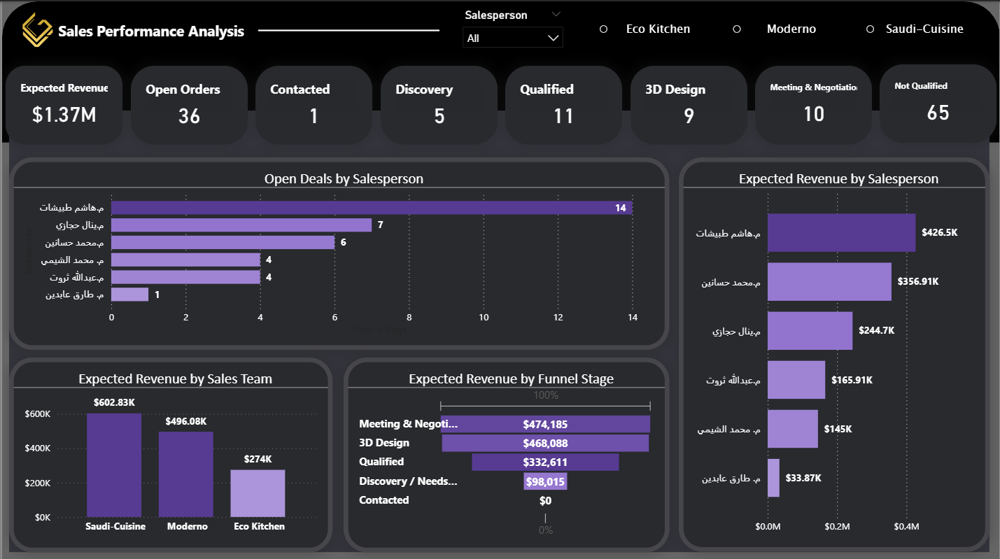
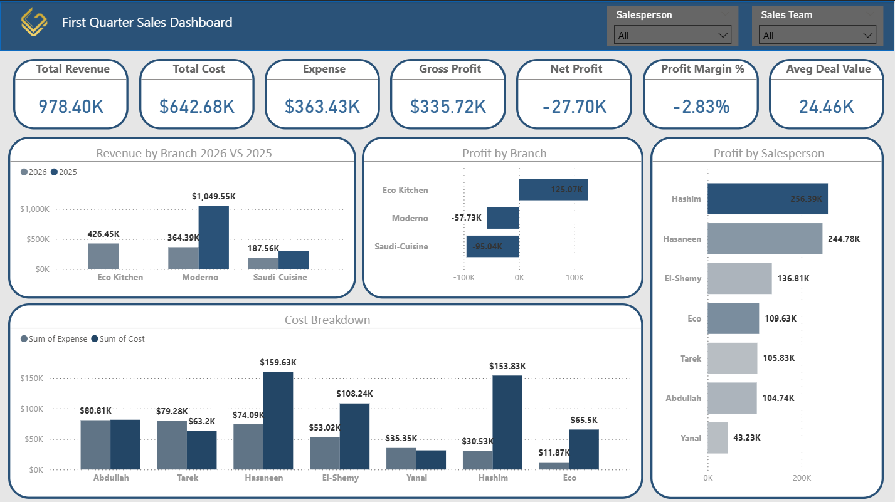
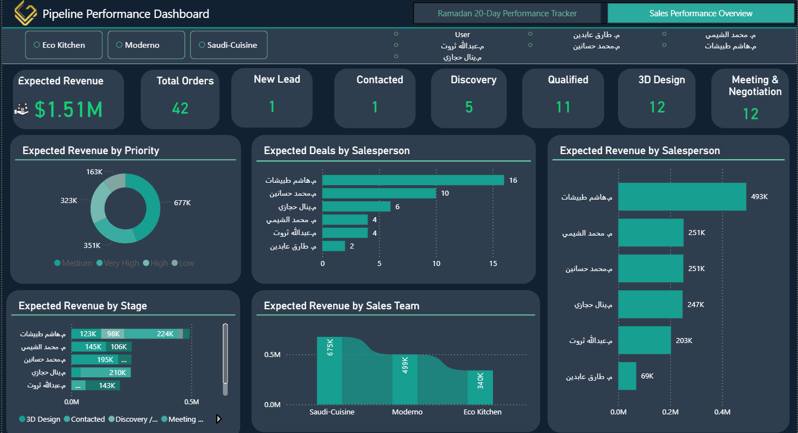
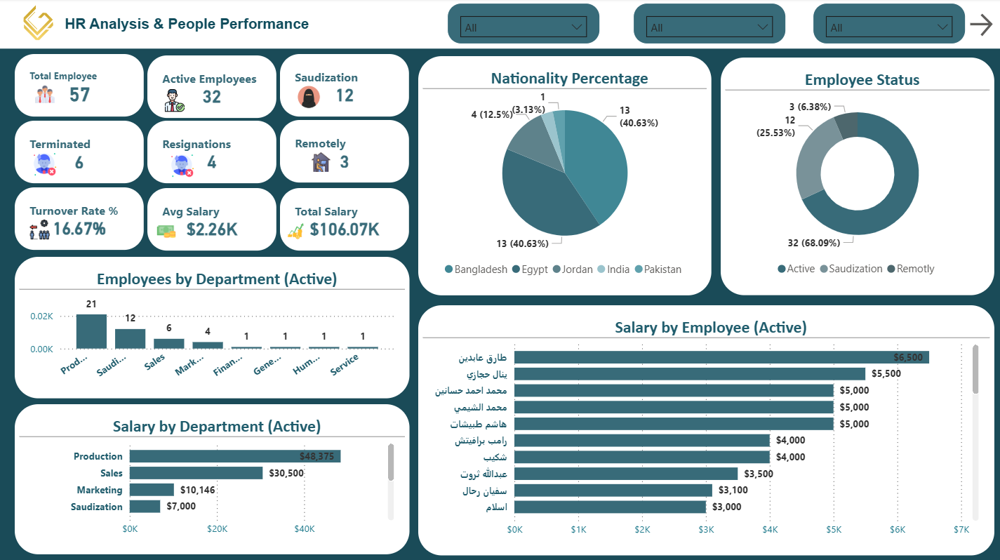

Senior Data Analyst | Sales, CRM & Financial Analytics
Data Analyst specialized in Sales, CRM, and Financial Analysis. I build dashboards, track KPIs, and deliver actionable insights that improve business performance and support strategic decision-making.
Open to Data Analyst opportunities | Saudi Arabia & Remote

Problem: Limited visibility into sales performance and targets.
What I did: Built KPIs for actual vs target, revenue tracking, and performance monitoring.
Tools: Power BI, Excel
Impact: Improved visibility and supported better business decisions.

Problem: The business lacked clear visibility into financial performance and profitability.
What I did: Built a dashboard to track revenue, costs, profit, and financial KPIs over time.
Tools: Power BI, Excel
Impact: Improved financial visibility and supported planning and decision-making.

Problem: Sales opportunities and loss reasons were not clearly tracked.
What I did: Analyzed pipeline, conversion rates, and lost opportunities.
Tools: Power BI, Excel
Impact: Improved understanding of process gaps and follow-up performance.

Problem: No clear employee performance tracking system.
What I did: Built dashboards for attendance, tasks, and performance indicators.
Tools: Power BI, Excel
Impact: Supported structured employee evaluation and reporting.
Email: omaralzayat515@gmail.com
GitHub: github.com/Omarkamal111
LinkedIn: linkedin.com/in/omar-kamal